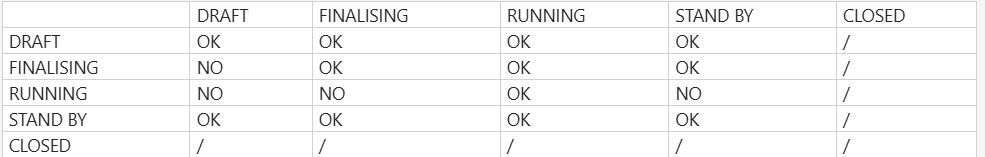
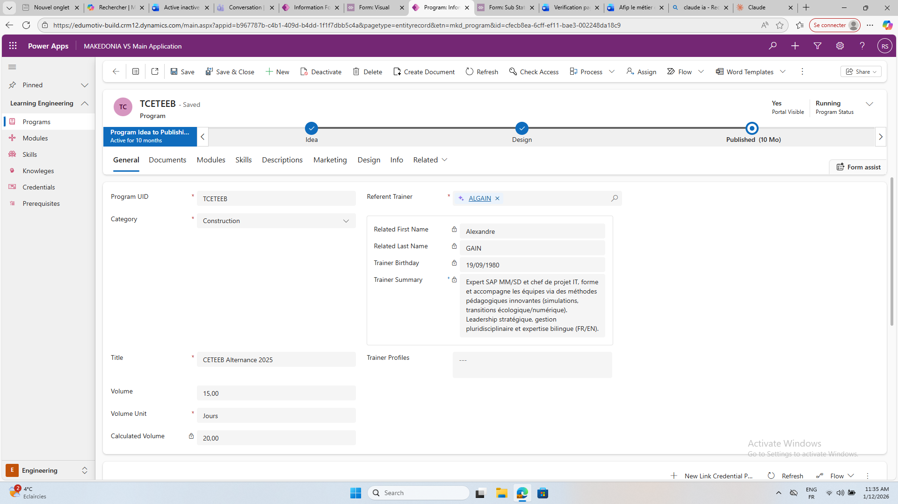
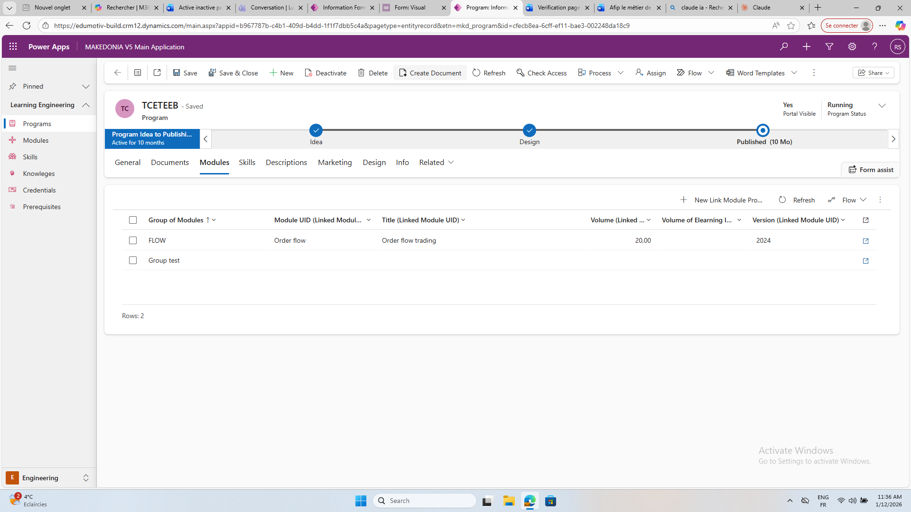
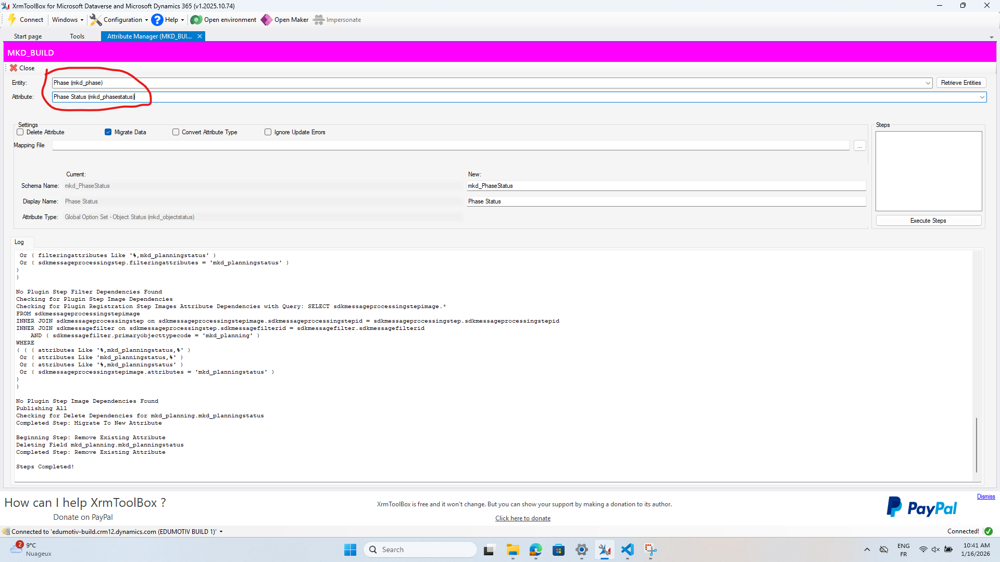
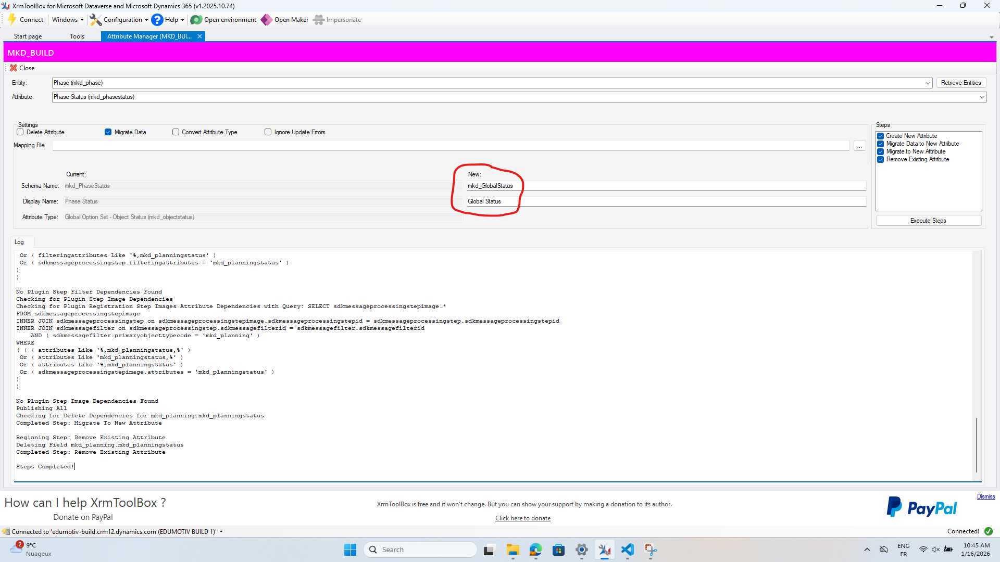
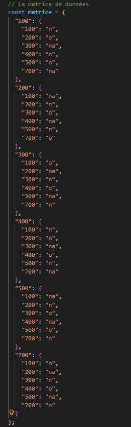
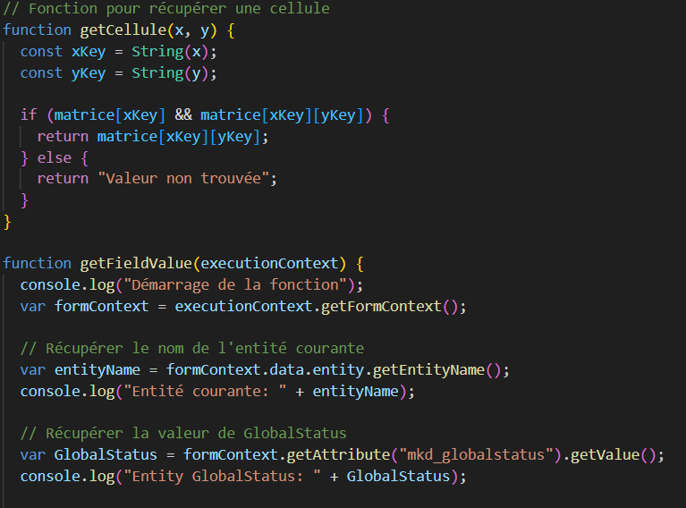
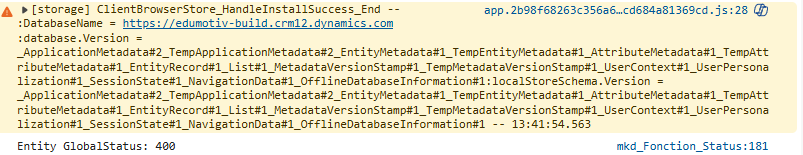
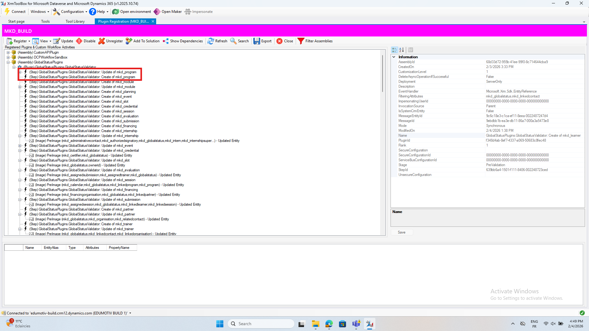

Stage — Édumotive
Gérance de statuts
L'objectif du projet était de récupérer les différents statuts et relations des entités afin d'évaluer leur cohérence sur la base d'une matrice, dans une logique de relation parent-enfant.
Matrice des statuts
Les entités pouvaient avoir les statuts suivants : DRAFT (début), Finalizing (fin), Running (mise en production), Close (annulation), Stand By (pause).

Il faut une cohérence entre le statut parent et enfant. Par exemple, un statut FINALISATION peut être associé à un statut FINALISATION, EN COURS ou EN ATTENTE, mais pas à BROUILLON.
Deux types de messages s'affichent selon la situation :
- Un message de blocage pour des statuts incompatibles (ex. Running)
- Un message d'avertissement lorsqu'un statut n'est pas recommandé mais reste enregistrable
Relation parent / enfant
PARENT

ENFANT

Remplacement des noms de statuts
Avant de récupérer les statuts, il faut remplacer leurs noms par des global status :


Code et récupération des statuts



Intégration Power Apps
Afin que le code puisse être transmis à Power Apps, il faut créer 2 types de plugin pour toutes les entités (create et update) afin d'assurer la transition du code JavaScript vers Power Apps.
